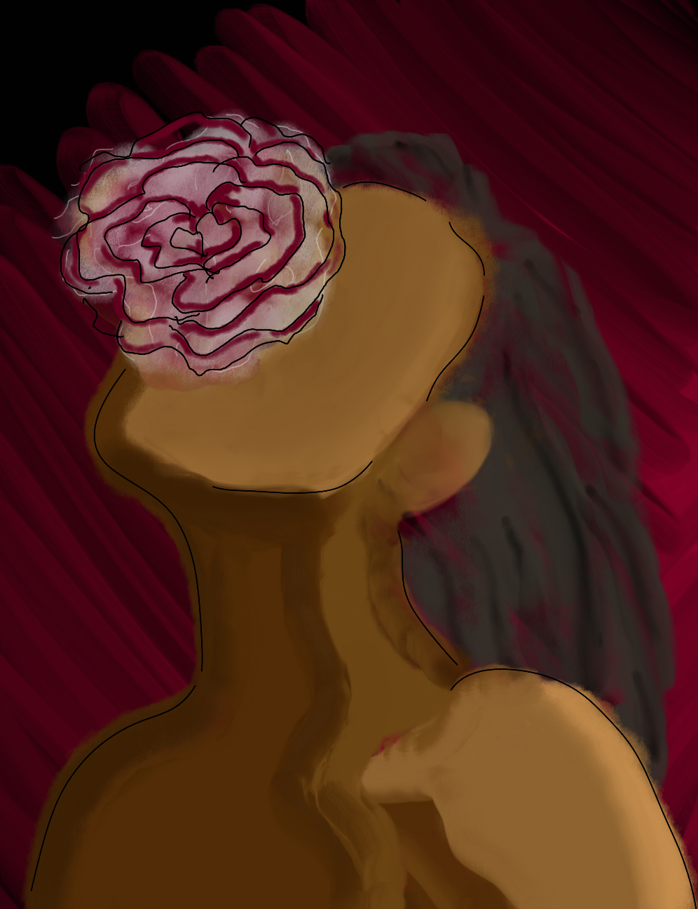
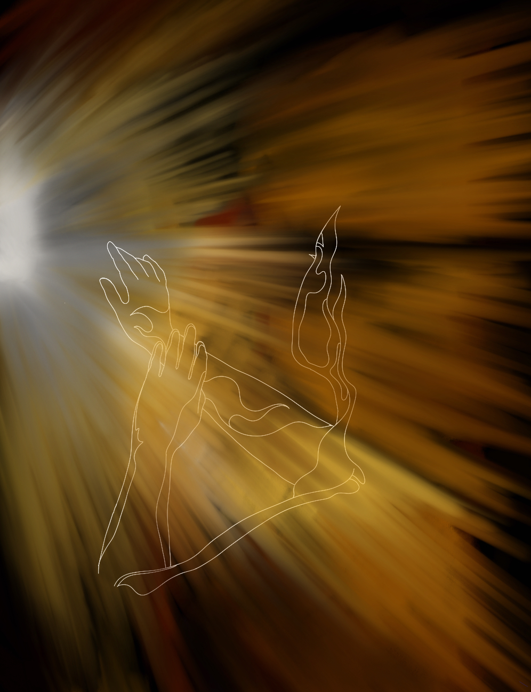
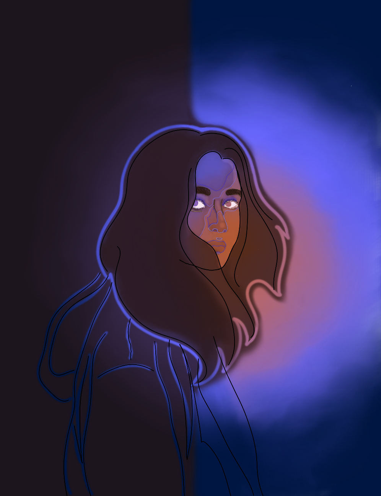

Voices Unheard is a space dedicated to amplifying overlooked stories, untold truths, and underrepresented creators from the margins of society—through art, expression, and community.
Browse Voices

Activism through Art

Forgotten Histories

Queer Perspectives

Women at the Margins